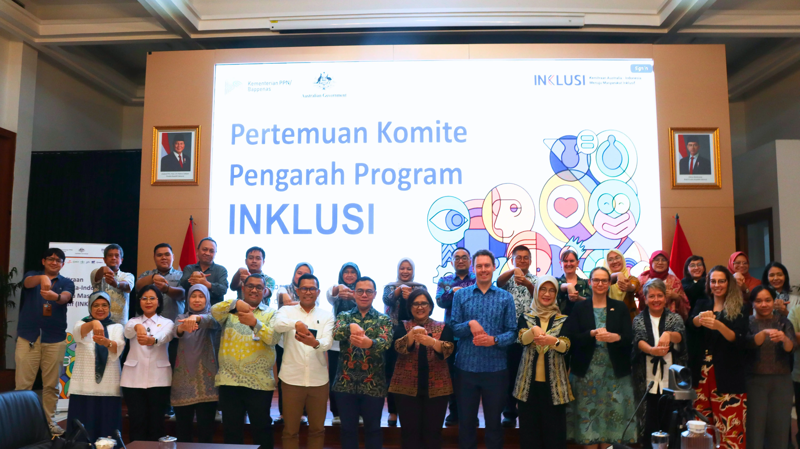
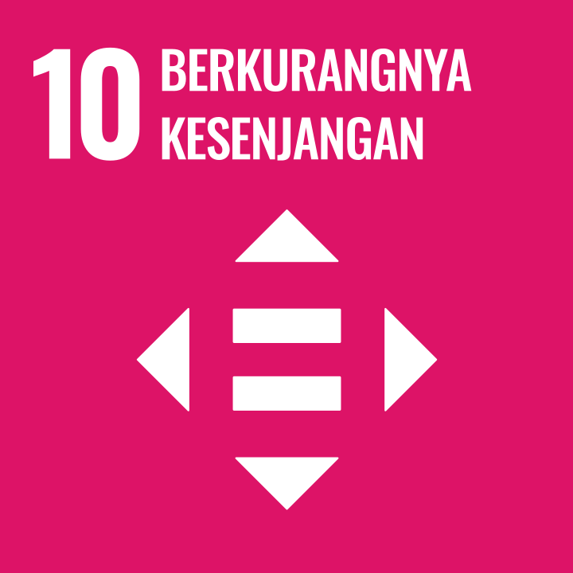
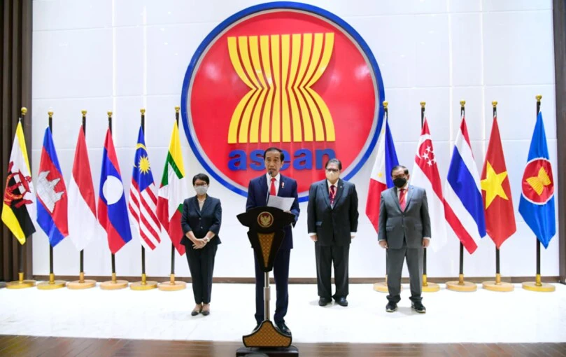
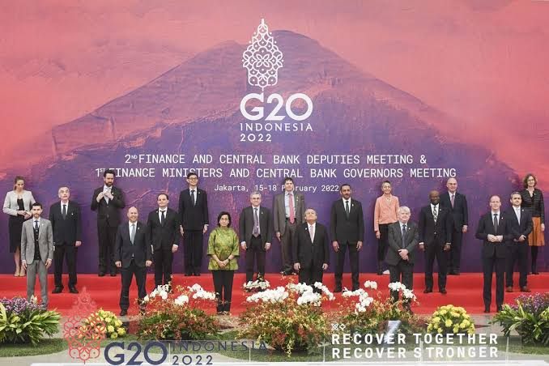
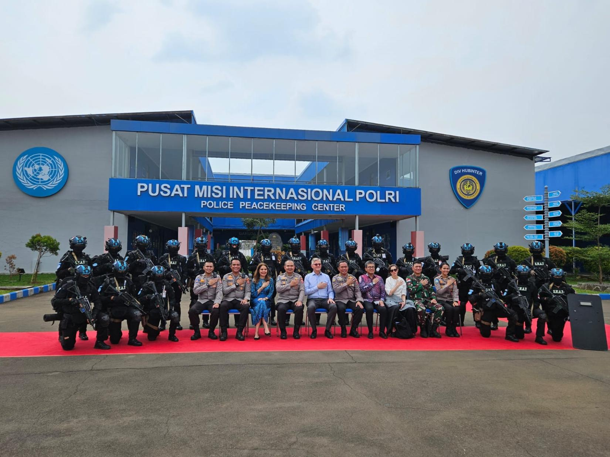

Peran Indonesia
Bekerja sama dengan pemerintah Australia, pemerintah daerah, dan organisasi masyarakat sipil untuk meningkatkan partisipasi kelompok rentan.
Karena mengatasi kesenjangan bukanlah tugas yang dapat diselesaikan oleh satu negara saja.
Permasalahan kesenjangan tidak hanya terjadi di Indonesia, tetapi juga dialami berbagai negara. Perdagangan global, migrasi lintas negara, dan hubungan ekonomi internasional membuat kondisi suatu negara dapat memengaruhi negara lainnya.
Oleh karena itu, Indonesia membutuhkan kerja sama dengan negara lain untuk memperoleh pengetahuan, pengalaman, teknologi, sumber daya, dan dukungan dalam menciptakan pembangunan yang lebih merata.

Kerja sama bilateral adalah kerja sama yang dilakukan oleh dua negara untuk mencapai kepentingan atau tujuan bersama.
Salah satu contohnya adalah Australia–Indonesia Partnership Towards an Inclusive Society (INKLUSI), yaitu program kemitraan antara Pemerintah Indonesia dan Australia. Program ini berlangsung selama delapan tahun (2021–2029) dengan tujuan meningkatkan partisipasi kelompok terpinggirkan dalam pembangunan sosial, ekonomi, dan politik.
PROGRAM INKLUSI • 2021–2026Bekerja sama dengan pemerintah Australia, pemerintah daerah, dan organisasi masyarakat sipil untuk meningkatkan partisipasi kelompok rentan.
Mendukung kesetaraan gender, hak penyandang disabilitas, dan keterlibatan kelompok rentan dalam pembangunan sosial, ekonomi, serta politik.
Memperluas akses ke pelayanan, perlindungan, dan kesempatan berpartisipasi dalam pembangunan.

Program INKLUSI mendukung SDGs 10 karena bertujuan untuk mengurangi kesenjangan dengan meningkatkan kesempatan dan partisipasi kelompok yang sering mengalami diskriminasi atau keterbatasan akses. Program ini berkaitan dengan target 10.2, yaitu mendorong inklusi sosial, ekonomi, dan politik bagi semua orang.

Kerja sama regional adalah kerjasama yang dilakukan oleh beberapa negara dalam suatu wilayah untuk mencapai kepentingan bersama.
Organisasi regional yang berkaitan dengan SDGs 10 adalah ASEAN (Association of Southeast Asian Nations), yaitu organisasi kerja sama antara negara-negara di daerah Asia Tenggara. Salah satu topik perhatian ASEAN adalah perlindungan hak pekerja migran.
ASEAN CONSENSUS • 14 Nov 2017Indonesia • Malaysia • Singapura • Thailand • Filipina • Brunei Darussalam • Kamboja • Laos • Myanmar • Vietnam
Indonesia dalam kerjasama reigonal memiliki peran sebagai anggota ASEAN yang ikut menyepakati dan mendukung perlindungan hak pekerja migran. Indonesia juga memiliki kepentingan untuk melindungi warga negaranya yang bekerja di negara-negara lain di kawasan Asia Tenggara.
Pada 14 November 2017, para pemimpin negara ASEAN menandatangani ASEAN Consensus on the Protection and Promotion of the Rights of Migrant Workers. Kesepakatan ini menjadi kerangka kerja untuk memperkuat perlindungan hak pekerja migran, termasuk perlakuan yang adil, perlindungan sosial, akses kesehatan, dan keadilan.
Mendorong perlakuan yang lebih adil, meningkatkan perlindungan, dan membantu pekerja migran mendapatkan haknya.
Kerja sama ini mendukung SDGs 10 karena mendorong perlakuan yang lebih adil kepada pekerja migran, tanpa membedakan kewarganegaraan atau latar belakang mereka. Hal ini berkaitan dengan target 10.7, yaitu memfasilitasi migrasi yang aman, tertib, dan bertanggung jawab.

Kerja sama multilateral adalah kerjasama yang melibatkan banyak negara untuk membahas dan mengatasi permasalahan atau kepentingan bersama.
Forum yang terlibat adalah G20 (Group of Twenty), yaitu forum kerja sama internasional yang terdiri dari negara-negara anggota G20. Salah satu kelompok kerjanya adalah Global Partnership for Financial Inclusion (GPFI), yang berfokus pada peningkatan inklusi keuangan.
G20 PRESIDENCY • 2022Indonesia berperan sebagai Presidensi G20 pada tahun 2022. Melalui Bank Indonesia dan Kementerian Keuangan, Indonesia ikut memimpin pembahasan GPFI serta mendorong peningkatan akses masyarakat ke layanan keuangan digital dan pembiayaan UMKM.
Pada tahun 2022, Indonesia mendorong penyusunan Kerangka Kerja Inklusi Keuangan sebagai panduan bagi negara-negara untuk memperluas akses layanan keuangan melalui digitalisasi. Kerangka tersebut mencakup panduan kebijakan, pengembangan layanan keuangan digital untuk UMKM, serta penguatan data mengenai UMKM.
Memperluas akses keuangan masyarakat, membuka peluang pembiayaan UMKM, dan mendukung pemberdayaan perempuan serta anak muda.
Kerja sama ini mendukung SDGs 10 karena berusaha mengurangi kesenjangan ekonomi melalui pemerataan akses keuangan. Dengan adanya akses yang lebih luas ke layanan keuangan, kelompok masyarakat yang sebelumnya kurang terlayani dapat memperoleh kesempatan lebih besar untuk mengembangkan usaha dan meningkatkan kesejahteraan.
Membangun masa depan yang lebih berkelanjutan melalui kolaborasi global.

Pada 13 Agustus 2025, Indonesia dan Perserikatan Bangsa-Bangsa meluncurkan Kerangka Kerja Sama Pembangunan Berkelanjutan 2026–2030.
Kerangka ini menjadi pedoman kolaborasi antara Pemerintah Indonesia dan sistem PBB untuk menyelaraskan pengetahuan, sumber daya, serta kemitraan dalam mendukung pembangunan nasional dan pencapaian SDGs.
Kerangka kerja sama ini melibatkan berbagai pihak dalam perencanaan dan pelaksanaan pembangunan.
Menentukan prioritas dan arah pembangunan nasional bersama mitra PBB.
Menyediakan keahlian, sumber daya, dan dukungan untuk mencapai SDGs.
Memberikan masukan dan ikut mendukung pembangunan yang inklusif.
Berkontribusi melalui inovasi, kemitraan, dan partisipasi dalam pembangunan.
Mendukung upaya meningkatkan kesejahteraan dan memperluas kesempatan ekonomi.
Mendorong peningkatan kualitas sumber daya manusia dan akses terhadap layanan dasar.
Mendorong pertumbuhan ekonomi yang inklusif dan berkelanjutan.
Kerangka kerja sama Indonesia–PBB mendukung pencapaian SDGs secara menyeluruh. Hubungannya dengan SDGs 10 terlihat dari upaya mengurangi kemiskinan, memperluas akses pembangunan, serta memastikan kelompok masyarakat yang rentan tidak tertinggal.
Kerja sama antarnegara juga mencerminkan nilai-nilai Pancasila. Melalui hubungan yang saling menghormati, Indonesia dapat berkontribusi dalam menciptakan dunia yang lebih adil dan sejahtera.
Kemanusiaan yang Adil dan Beradab. Menghormati hak asasi manusia dan memperlakukan setiap orang secara adil.
Persatuan Indonesia. Mengutamakan persatuan dan kerja sama dalam menghadapi permasalahan bersama.
Keadilan Sosial bagi Seluruh Rakyat Indonesia. Mendorong kesempatan dan kesejahteraan yang lebih merata.